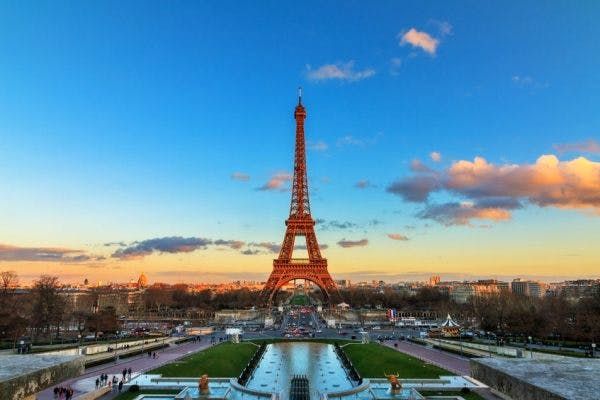

Parigi è la capitale della Francia e si trova nella parte centro-settentrionale del territorio, ed è al quinto posto come più popolata d’ Europa. Grazie ai numerosi musei, bellezze storiche e moderne è visitata da oltre 28 milioni di turisti l'anno, infatti è la città più visitata al mondo.Ma perchè scegliere come meta delle proprie vacanze?
Chi si reca a Parigi per motivi di piacere molto probabilmente non lo fa soltanto per ammirare
la bellezza di una città che in quanto a fascino ed eleganza ne ha davvero da vendere, con i suoi monumenti,
i suoi parchi, i suoi musei e tutte le altre attrazioni per le quali sussiste anche un certo imbarazzo della
scelta sulle priorità di visita.Spesso e volentieri.
A Parigi, insomma, ci si può divertire moltissimo, merito di una città vivace che vive dell'armonia fra il vecchio
e il nuovo, fra la sontuosità e la serietà del classico e la informalità del moderno, fra i segni di una storia antica
affascinante e travagliata e il richiamo alle intriganti tentazioni del divertimento più moderno e all'avanguardia.
Ecco perché a Parigi eventi, fiere e feste sono così numerosi e seguiti; ecco perché a Parigi non ci si annoia mai e,
chi vi si reca una volta, spesso e volentieri desidera ritornarci al più presto, magari in periodi diversi dell'anno,
per sfruttare al meglio alcune ricorrenze stagionali e tutto ciò che la città offre nelle più varie occasioni.
Gli eventi a Parigi possono riguardare sia l'intera città, e anzi l'intera Francia, sia alcuni suoi quartieri,
con quindi una valenza locale, con caratteristiche peculiari per ogni circostanza. Si pensi ad esempio
a quartieri rinomati della capitale francese, quali il quartiere Montmartre ed il quartiere Belleville,
dove hanno luogo interessanti gallerie d'arte accessibili gratuitamente, le cosiddette Portes Ouvertes.
Da un punto di vista organizzativo, si deve considerare che molti negozi, monumenti e musei in Francia,
e quindi anche a Parigi, sono chiusi durante le festività, e anzi spesso accade che rimangano chiusi anche nei giorni di ponte,
quando i giorni di festa capitano di martedì o di giovedì. Per regolarsi sui giorni di festività,
si consideri che esiste il Calendrier des Manifestations (Calendario delle Manifestazioni),
un valido sussidio per conoscere in anticipo e nei particolari i più importanti eventi che si tengono a Parigi.
Il calendario che segue Parigi, risalente al 1582, prevede diversi giorni di festa all'anno,
alcuni dei quali sono improntati alla commemorazione; in particolare si festeggia l'occorrenza della Presa della Bastiglia del 1789,
il 14 luglio di ogni anno, festa nazionale della Francia, circostanza molto vivace in cui si tengono diversi eventi di intrattenimento e,
la notte, festosi fuochi d'artificio colorano il cielo in modo spettacolare.
Se c’è una cosa di cui i francesi sono molto fieri è la loro cucina. Lo sviluppo della cucina francese è iniziato nel medioevo, l’epoca dell’aristocrazia borghese e della classe operaia, poco prima della Rivoluzione Francese. Allora ognuna delle regioni francesi aveva una sua cucina tipica, apprezzata da entrambe le classi sociali. Con il passare del tempo, il susseguirsi di eventi storici e in seguito a vari sviluppi geografici, queste cucine regionali così differenti tra loro hanno trovato un punto di incontro a Parigi, nel cuore della Francia.